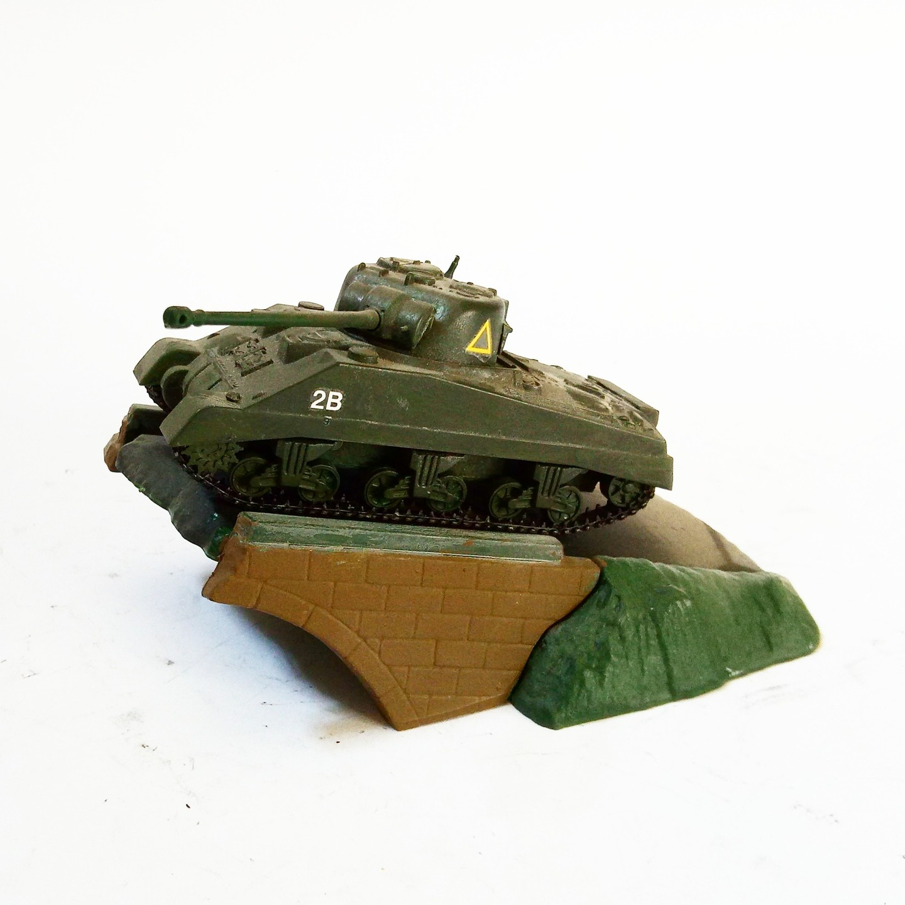

Mezzi militari · scale model archive
Sherman tank 'Firefly'
Sherman tank 'Firefly' — Kit: Matchbox, Scale: 1/72. Sherman tank with improved british 17 pounder anti tank gun Nice little diorama included in the kit…

Photo gallery
English description
Sherman tank with improved british 17 pounder anti tank gun
Nice little diorama included in the kit
#1/72 #Matchbox
Descrizione italiana
Sherman autoro con improved british 17 pounder anti autoro gun.
Bello piccolo diorama included nel kit.